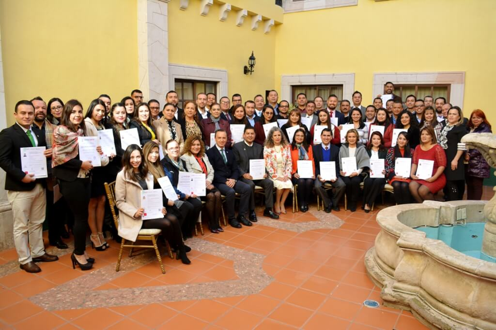

Mi nombre esHugo AntonioLetechipía Chávez |
|---|
Docente del ITSZNDocente del Instituto Tecnológico Superior Zacatecas Norte desde el año 1997 en las áreas académicas de Ingenieía en Sistemas Computaccionales e Ingenieria en Tecnologias de la Informacion primordialmente y docente de apoyo en las áreas académicas de Ingeniería en Administración e Ingeniería Electromecánica |
Areas de conocimiento:
|
|---|
Primaria: |
Escuela Primaria "Justo Sierra"Río Grande, Zac.1978-1984 |
|---|
Secundaria: |
Escuela Secundaria Federal "Ignacio Manuel Altamirano"Río Grande, Zac.1985-1987 |
|---|
Bachillerato: |
Instituto DurangoDurango, Dgo.1988-1990 |
|---|
Licenciatura: |
Tecnológico de ZacatecasIngeniería en Sistemas ComputacionalesZacatecas, Zac.1978-1984 |
|---|
Otras Actividades:
|
Titular de la Unidad de Transparencia
Unidad administrativa encargada de asesorar y orientar en el llenado de los formatos de solicitudes de información, así como en los trámites para el efectivo ejercicio de los derechos de acceso a la información y tutela de datos personales. Asimismo, la Unidad de Transparencia es la encargada de asistir en lo relativo a orientar sobre la prestación del servicio o sobre el ejercicio de las funciones o competencias a cargo de los servidores públicos del Instituto. |
 |
|
Apoyo a Difusión
Proyecto que permite coadyuvar en el fortalecimiento de imagen institucional en base a la identidad gráfica de los diversos materiales de difusión, así como la generación de elementos de comunicación visual que se distribuyen o transmiten a través de los medios de comunicación y redes sociales del Instituto. |
| www.itszn.edu.mx | www.transparencia.itszn.edu.mx | http://stitsznderiogrande.org.mx/ |